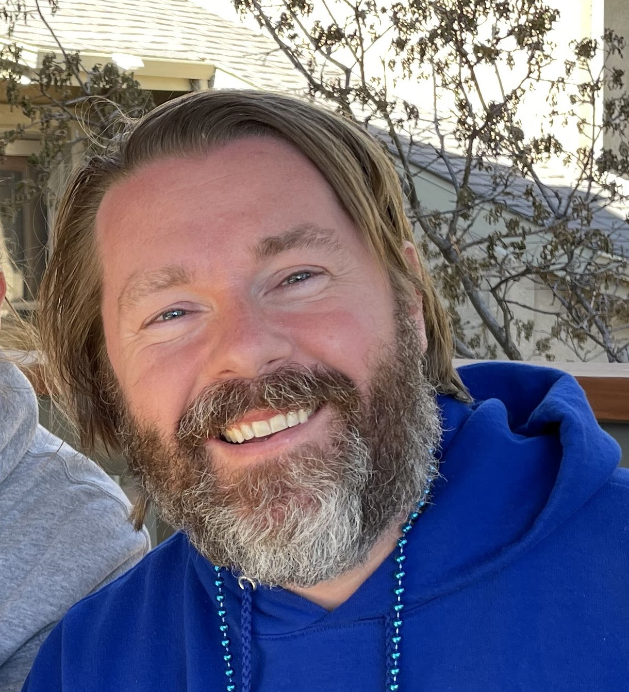

About Me
I was born in Durham, NC in 1977; I have lived almost all of my life in either Raleigh or Durham. I graduated from Leesville Road High School in 1995; UNC-Wilmington in 2001 with dual Bachelor of Science degrees in Operations Management and Information Systems; and UNC-Chapel Hill in 2011 with a Master of Arts degree in Educational Psychology, Measurement, and Evaluation. From 2012 to 2018 I attended UNC-Greensboro where I was one dissertation away from completing all my requirements for a PhD in Educational Research Methodology. Prior to signing up for the Full Stack Developer Bootcamp I had worked for the past 20 years in the educational testing industry at Measurement Inc. (MI) where I was the lead psychometrician for all of MI's New Jersey statewide assessment contracts.
In June of 2013 I acheived my major life goal and married the lovely and talented Dr. Jennifer Treeger Bowen. We have two kids: Gus and Charlie Peters; we also have three cats: Milo, Pippin, and Ursa. We live in Durham, NC where we spend our down time watching movies, playing board games, listening to music, crafting/DIY-ing, gardening, practicing yoga, and interacting with friends and family. I am very excited about learning the skills of a Full Stack Developer and using those skills at a future employer and for fun at home. Examples of passion projects I have implemented at home are displayed below in the work section.